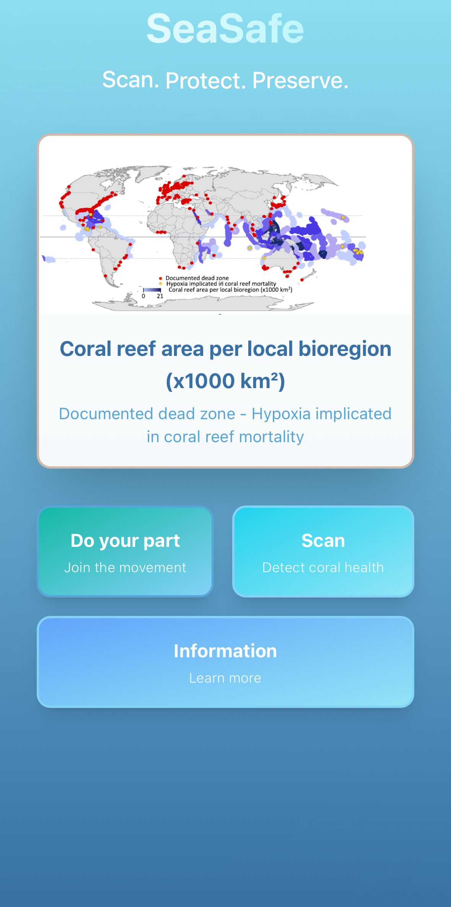
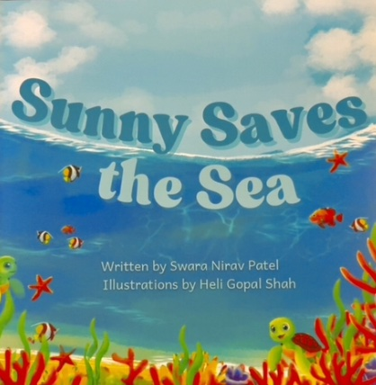
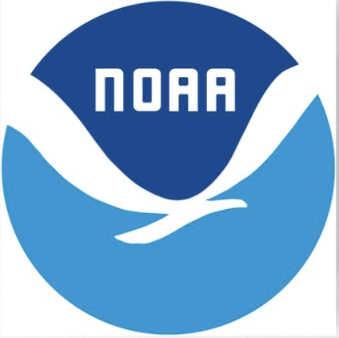
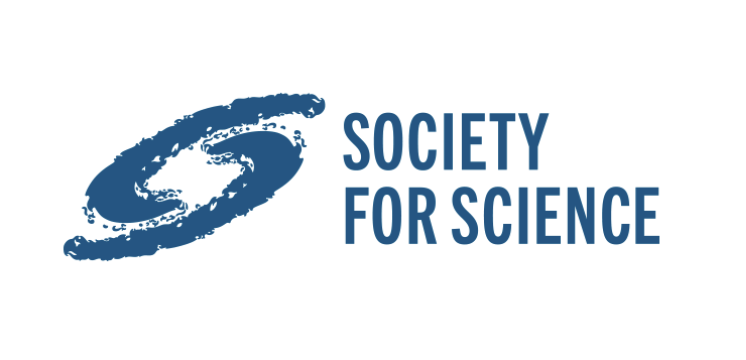
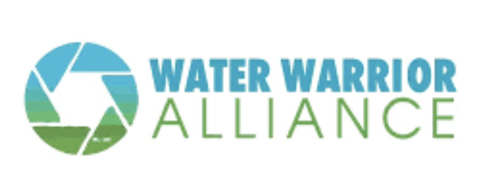
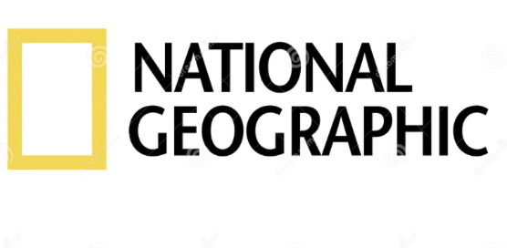
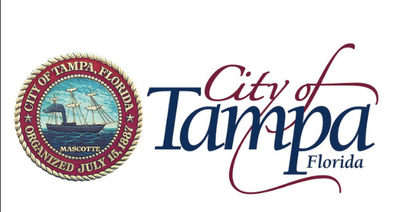
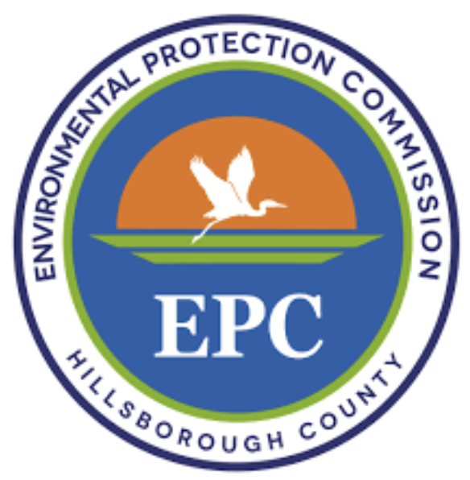
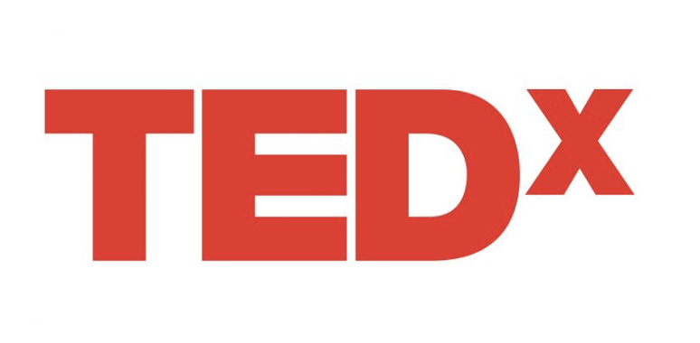

Researcher · Advocate · Entrepreneur

I am a student researcher and climate advocate working at the intersection of science, sustainability, and public policy. I have presented at TEDx, the United Nations, and conduct award-winning research in agriculture, desalination, and environmental resilience.
Operation SeaSafe is a multi-faceted environmental initiative focused on marine conservation in Florida. This includes conducting research on waste prevalence in the Anclote River, leading monthly WaterGoat cleanups that have removed thousands of pounds of trash, and developing the SeaSafe app to help consumers identify reef-safe skincare. The initiative also educates youth on ocean preservation and promotes community engagement for cleaner oceans.
Founder & CEO — sustainable farm-to-table business.
Founder & President — STEM mentorship program.
Communications Specialist, North America.
ISEF & State Science Fair research predicting crop yield.
Duckweed-based desalination in hydroponics.
Published research on PM2.5 and PM10 prediction.
Executive Board — civic engagement initiatives.
Writer on coral restoration & reef safety.
AAUS-certified diver conducting marine research.
Spoke during the 80th United Nations General Assembly advocating for marine conservation, youth leadership, and coral reef protection.
Delivered a TEDx talk on ocean sustainability and youth advocacy, reaching over 18,000 viewers.
Authored a children’s book to raise awareness about coral reef conservation and ocean stewardship.

Inspired by real-life coral reef degradation in the Florida Keys.
Written after the author’s real-life experiences witnessing coral life degradation in the Florida Keys, this story follows Sunny, a sea turtle who discovers his reef abandoned and choked by plastic.
After saving a friend from debris, Sunny recruits local children to clean up the ocean. Together, they restore the reef—illustrating the devastating impact of pollution and the power of collective action.
Selected features, talks, interviews, and articles.







Email: swarap3109@gmail.com